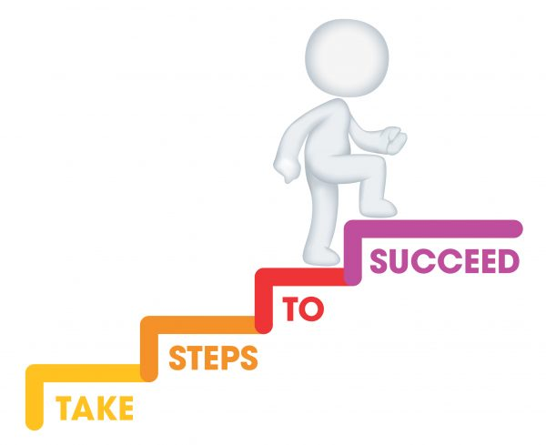

Inpatient level of care is considered the highest level of care someone can receive. Generally speaking, this level of care is authorized for individuals whose symptoms pose an immediate danger to self (suicidal), to others (homicidal), or symptoms that are causing the individual to engage in behaviors or actions that they would not otherwise do in the absence of the mental illness. Some specific examples of this include: a patient in a manic state who has not slept in several days and spending their savings on items they do not need. A patient experiencing psychosis and hearing voices that are telling them to walk into traffic. A patient who is catatonic and refusing to eat or drink.
The Continuum Care The continuum of care describes the differing levels of care a patient makes as they progress through treatment. Patients may enter the continuum at any level of care depending on their symptoms however, they should progress through each step to achieve the best possible outcome. One of the most common mistakes a patient or family can make is to assume that once a patient is stabilized at a higher level of care, that they can then skip several steps of the continuum and become reemerged in the same in environment that they were in prior to seeking care. This can then lead to the patient needing to “step up” from their current level of care. This is particularly prevalent in the substance abuse community and with adolescents needing mental health treatment.

PHP level of care is utilized for individuals struggling with substance abuse or mental illness or both but are not considered in imminent risk of danger to self or others. The patient will reside at home however will attend therapy throughout the work week. Most PHP have the patient attend treatment M-F for approximately 5 hours a day. The patient will also see a medication provider at least 1x per week. PHP is conducted in a group environment and generally consists of psych-education groups, skill building, individual therapy, and check-ins. A Family therapy is usually built in the curriculum for adolescent patients.
IOP level of care is primarily therapy driven. Individuals in IOP do not require weekly provider medication management. Programming on the whole is generally less comprehensive as PHP and will work
Individual Therapy is one on one talky therapy. You just got your head shrunk, foo!